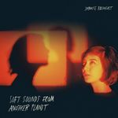

Quick Takes (July 2017)
Welcome to the latest installment of Quick Takes! Carl and I took a bit longer than usual to publish this month's issue, but it is still summer after all, so we'd like to think you'd understand.
Lazy excuses aside, it's also fair to point out that the summer usually does see a decrease in the total amount of notable releases. We were still able to find some we wanted to write about, though, and some may even make our Year-End list. Carl has very positive things to say about Childhood's second effort, while I was in awe with Japanese Breakfast's breakthrough solo effort. And as always, there's also the duds: I wasn't too impressed with HAIM's latest burst of California pop; Carl, on the other hand, didn't think much of Manchester Orchestra's unconvincing rock anthems.
What were your favorite albums during the month of July? Anything we didn't get to review on our site that we should've? You can always reach us on Facebook, or on our official twitter page. - Juan
...
 Childhood
Childhood
Universal High
(Soundly Music, LLC)
Brixton five-piece Childhood have followed up their debut LP – 2014’s Lacuna – with a swirling, kaleidoscopic effort that oozes groove and sweet, syrupy soul. Where Lacuna put a shoegazing spin on Childhood’s sound, Universal High is delectably fluid, ditching the woozy guitar pedals for a pristine funk texture that discharges a piquant dose of marvelous futurism. Recorded in Atlanta, the record anchors itself in retro soul. It’s impossible not to hear flashes of Tame Impala - the modern-day pinnacle of psychedelic pop – and the resourceful deployment of warped synths, sparse arrangements, exquisitely mixed drums and bass deeper than the Marianas Trench is a testament to the quality of Childhood’s output. Lead single Californian Light is one of the tracks of the summer, with Ben Romans-Hopcraft’s tethered falsetto dancing over a deliciously funky groove under a Motown governance. It sounds like a natural progression for the Londoners, and in the process, they have made something that tips its hat to decades-old tendencies whilst sounding more modern than most records to drop in 2017. [8/10] Carl Purvis
 Cornelius
Cornelius
Mellow Waves
(Rostrum Records)
Mellow Waves is as apt a title as has ever existed. Cornelius, the moniker of Keigo Oyamada, has been quiet for over a decade after a string of consistent electronic releases. No Cornelius record isn’t the same, and though his creativity knows no bounds, it’s also taken for granted to a large degree. It’s as if audiences are expecting him to release another body of work that resembles his 1997 oddball masterpiece, Fantasma. Luckily, Oyamada follows his steady, beating pulse on Mellow Waves: from the gentle jazz streaks of Dear Future Person to the quiet acoustic fingerpicking of The Rain Song, Oyamada commands your careful attention even if it always maintains a soft, low decibel level. Sometimes it does get a little bit drowsy for its own good, especially when the album’s lush, unconventional textures dissolve into pleasant post-rock ambiance. Perhaps Mellow Waves doesn’t immediately grab your attention like some of Oyemada’s past work, but his careful attention to craft remains intact. [7/10] Juan Edgardo Rodríguez
 HAIM
HAIM
Something to Tell You
(Columbia)
HAIM deliver simple pleasures on Something to Tell You. It breezes along with hardly a scratch, eleven facsimiles of the West Coast pop template they prematurely mastered on their debut effort, Days Are Gone. The LA trio came fully-formed from the get-go with a pleasure pack of vintage pop hooks, which explains why they’re widely considered as an edgier alternative to occasionally shake up the top 100 hegemony. At least edgier in the sense that it’s kind of old-fashioned for a younger generation to appreciate the VH1-endorsed, early-nineties soft rock of the time. But do HAIM automatically get a pass with their terminally boring pastiche, only because it manages to transcend generations? The success of Days Go By certainly wasn’t accidental; it was something of a miracle that they had cleverly sculpted a prim, bubblegum sound that resonated with a more adult sophistication. Something to Tell You doesn’t attempt anything new and keeps it safe, though, and when your best track is yet another sanitized extract of Tango in the Night, well, that’s not saying much. [5/10] Juan Edgardo Rodríguez
Japanese Breakfast
Soft Sounds from Another Planet
(Dead Oceans)
Japanese Breakfast could’ve easily been a low-key transition for Michelle Zauner. Instead, the unassuming bedroom project has already received more attention than her previous band Little Big League. Sometimes these little happy accidents can happen unexpectedly, except that in the case of Zauner, she just hadn’t found the proper platform to grow as an artist. Her debut record, Psychopomp, was an honest look into grief at its most nascent, channeling these emotions with bare power chord strums over shrewd lyrical observations. However, she’s retained the dreamy ambiance of that album and translated it with sweet, shimmering soundscapes on her latest, Soft Sounds from Another Planet. The changes are significant: whether she’s channeling Phil Spector-informed pop on the title track, or fleshing out sweeping Brit rock on Driving Woman, Zauner is magnifying her own individual identity with the same barbed remarks. But she’s actually at her best when she builds on her aching vocal delivery, tonally reminiscent of Innocence Mission’s Karen Peris, with lilting indie rock on 12 Steps and The Body Is a Blade. It’s a wondrous gem of an album that, even at its most lustrous, manifests itself with biting precision. [8/10] Juan Edgardo Rodríguez
Manchester Orchestra
A Black Mile to the Surface
(Loma Vista)
Manchester Orchestra frontman Andy Hull has always seemed old beyond his years. Casual fans of the band will probably be surprised to hear he’s only thirty years old when considered his wizened penchant for leading an expansive charge from amidst an undertowing pull of darkness and uneasiness. His songwriting is architectural, plotting blueprints before laying the foundations and building his works up to skyscraping heights. With A Black Mile to the Surface, the marriage of his vocals with a claustrophobic brand of grunge and an overly epic annoyance of Americana makes for a cinematic grandeur that matches his band’s ambition, but although it’s impressive in its execution it’s not a sound that will have you looking for the repeat button. For a band where constructing songs into rocket-fueled crescendos is their biggest strength, too often does A Black Mile to the Surface fail to take advantage of any momentum it builds, often taking the wrong fork on an ascent to a splendid finale. [5/10] Carl Purvis
 Mr Jukes
Mr Jukes
God First
(Island)
Jack Steadman has already achieved an awful lot in his fledgling career thus far. As the somewhat reluctant, vulnerable frontman of Bombay Bicycle Club, he’s been a key factor in the churning out of four well-accomplished LPs and more than a handful of festival-primed indie belters. With their most recent effort So Long, See You Tomorrow, a Steadman that had more strings to his bow was unveiled, spearheading a superb mesh of modern pop and an almost botanical brand of EDM. His first record as Mr Jukes feels like a glimpse into his own personal record collection, with his fetish for gloopy funk, retro R&B and acid-brass jazz thrown into a turntable-shaped melting pot in varying degrees of concentration, bubbling away under liquefied, soulful umbrella. It’s got a great list of guest vocalists, too, and it feels like each one has been recruited as a result of careful consideration. If there is a criticism, it’s that it’s a disjointed record that sometimes feels like Steadman focuses more on showing off his preferences than his own soul, but it sounds delicious either way. [8/10] Carl Purvis
 This Is the Kit
This Is the Kit
Moonshine Freeze
(Rough Trade)
Kate Stables strikes a solemn tone on Moonshine Freeze. Not that her decade-long folk rock project, This Is the Kit, has ever leaned too heavily on a particular emotional crutch. But on her last full-length, Bashed Out, she did embrace a whimsy that emanated with a more upbeat personality. She was bound to gain her audience tenfold, and instead of doubling down with an agreeable sound, she’s decided to challenge them by following a decidedly more theoretical approach. Many of the songs on Moonshine Freeze center around human connection and its different permutations, often performing them with a fluidity that feels spontaneous and unrehearsed. Even if they’re mostly sparse in constitution, Stables finds new and inventive ways to play her guitar, either by changing up the tempo or taking vocal risks. The cryptic nature of Moonshine Freeze impresses when at its uncompromising best, but it can occasionally underwhelm when she favors slimmer bare-bones arrangements. Still, these marked contradictions only reveal an artist who’s allowing herself to walk on a less purposeful path. [7/10] Juan Edgardo Rodríguez
Waxahatchee
Out in the Storm
(Merge)
Katie Crutchfield’s fourth LP as Waxahatchee is her sharpest yet. Her grunge-tinted indie rock is no longer the unpolished lo-fi snugfest that it initially was, and has instead involved into a clean, more focused arrangement that has kept its infectiously intimate sprawl. Recorded with Sonic Youth and Dinosaur Jr collaborator John Agnello, Out in the Storm is perennially bright, with its melodies maintaining a serrated edge that ensures the sound remains robust, immersive and hard-hitting. It’s a record that documents a reasonably messy break-up, and the characteristics of Crutchfield’s sound provide the ideal canvas for her own regret and release, always sounding alive and hopeful despite its conversationally confrontational lyrical content. Crutchfield’s band – which contains twin sister Allison – have bedded themselves into a streamlined, sleek sound that impresses in its lean buoyancy, and it's hard to argue that with this effort, Crutchfield has settled into an arrangement that brings the best out of her songwriting talent. [7/10] Carl Purvis
23 August, 2017 - 07:36 — No Ripcord Staff